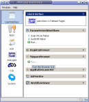
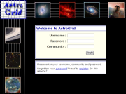

There are two main ways to access AstroGrid services: using a desktop application - the Workbench or a web interface - the Portal. Workbench and Portal provide slightly different capabilities:
| Capabiltiy | Workbench  |
|---|---|
| Login | Y |
| Query Registry | Y |
| Build Workflows | Y |
| Execute & Manage Workflows | Y |
| Execute CEA applications | Directly |
| Build catalogue queries | Y |
| Access Myspace | Y |
| Automation | Any shell or programming language |
| Requires | Java Web Start |
| Capabiltiy | Portal(depreciated)  |
|---|---|
| Login | Y |
| Query Registry | Y |
| Build Workflows | Y |
| Execute & Manage Workflows | Y |
| Execute CEA applications | Only within a workflow |
| Build Dataset queries | Y |
| Access Myspace | Y |
| Automation | JES Workflow Documents |
| Requires | Modern Web Browser |
There are other VO applications that can access some parts of AstroGrid - in particular MySpace.